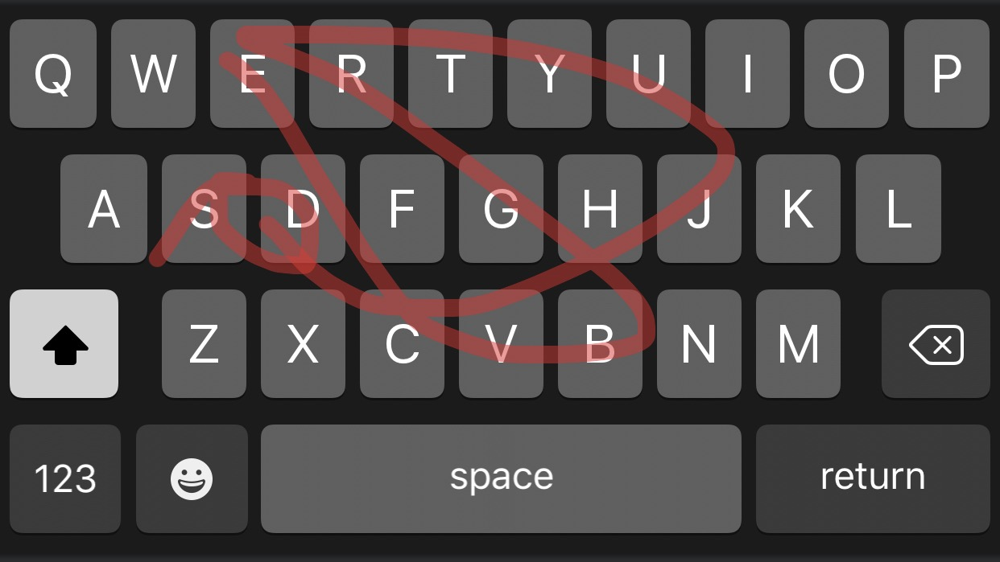

Large collections of text
Now we can start to build language models
… but there’s always uncertainty
Probability
Surprisal and information
Conditional Probability
Using probability for language modeling
Predictive Text and Swype
Probability and Corpus Size
The degree of certainty that the value of a variable (or correct answer to a question) is one thing and not another
Humans tend to think about this as ‘certain’, ‘impossible’, ‘likely’, ‘unlikely’
‘p(event)’ means ‘the probability of event occurring’
p(Heads) from a fair coin: 0.5
p(Heads) from a weighted coin: Not 0.5!
p(6) on a six sided die: 0.16666
p(6) on a twenty sided die: 0.05
p(You winning Powerball): ~0
p(Will wearing gray pants): ~1
p(heads) in a coin of uncertain fairness?
p(somebody's wearing a red shirt in class)?
p('yeet') in a corpus?
p('rolex') in a corpus?
What’s would be a surprise?
What’s would be completely unsurprising?
‘Surprise’ comes when something we judged to be improbable happens
When we’re surprised, we usually gain information about the world
Something which is completely certain happening… (P = 1)
… is completely unsurprising (surprisal = 0)
… is completely uninformative (information = 0)
Something which happens, despite seeming impossible… (P = 0)
… is infinitely surprising (surprisal = ∞)
… is infinitely informative (surprisal = ∞)
Everything else is in the middle (0 < P < 1)
‘the’ occurring in an English document
The sun rising tomorrow
Will wearing non-gray pants
Will cancelling the final project and giving everybody A’s
‘mel-frequency cepstral coefficient’ occurring in a document
‘mel-frequency cepstral coefficient’ occurring in a TikTok
Winning Powerball
How surprising it is
… and how informative it is!
“How likely am I to be surprised here?”
The sun will rise tomorrow
Will will wear gray pants Wednesday
10 heads in a row while flipping a weighted coin
10 heads in a row while flipping a fair coin
The coin landing on edge after being flipped
The next 20 sided dice roll being 17
‘What is the probability of this event, given that this other event occurred?’
p(event|other event) means ‘the probability of an event
occurring, given that the other event occurred’What’s p(pun)? What about
p(pun|Will)?
What’s p(fire|smoke)? What about
p(smoke|fire)?
What’s p(Will calls in sick)? What’s
p(Will calls in sick|he did last class)?
What’s p(heads) on a fair coin? What’s
p(heads|prior heads)?
Does the change in conditioning event affect the observed probability?
One event’s probability depends on the other’s!
If so, there’s an informative relationship!
Two events have “mutual information” if there’s some relationship
Language modeling is about finding informative relationships between linguistic elements!
p('you'|'how are')
vs. p('dogs'|'how are')
p(adjective|'I am')
vs. p(noun|'I am')
p(good review | "sucks")
vs. p(bad review | "sucks")
When we do machine learning, we learn a large set of dependent probabilities among linguistic elements!
We’re trying to predict one variable by observing others!
What kinds of probability modeling could help us?
What would we predict? What could we observe?
What kinds of probability modeling could help us?
What would we predict? What could we observe?
What kinds of probability modeling could help us?
What would we predict? What could we observe?
“Is this a tweet? Technical report? News article? Sports article? Product Review?”
What kinds of probability modeling could help us?
What would we predict? What could we observe?
“Does the person talking about this product (e.g.) like it?”
What kinds of probability modeling could help us?
What would we predict? What could we observe?
What kinds of probability modeling could help us?
What would we predict? What could we observe?
p('the'|article about a white athlete)
vs. p('the'|article about a black athlete)?
p('wife'|article about a white athlete)
vs. p('wife'|article about a black athlete)?
It must be that the use of some words is predictable by athlete race!
When you read enough sentences, you get a sense of which words follow each other
Imagine somebody’s writing an email…
“Given the last N words, what is the most likely word?”
Some variants will modify guesses based on previous words
Testing the first time and then it is fine but it’s a nice little app but it does have to a lot cheaper than it but it’s fun and it makes it very interesting and it is a great idea for a great time with good people to play for a bit and a great way home fun fun and good way cheaper cheaper and cheaper than a free version for a free app but
Hi I hope you’re doing alright girl you are so nice to you have fun I hope you’re having fun I’m sorry I’m not gonna was a nice night I just wanna
‘Swype’ was an app developed by Nuance Communications
Move your finger across the keyboard to type
Choose the most probably combination of characters given the curve
Later stolen by EVERYBODY




Swypes are not precise enough to recover all characters in the proper order
You must rule out non-word combinations
… and guess the most likely candidate!
They allow us to utilize the probability of words
They allow us to model the mutual information of word and its neighbors
They allow us to do real language understanding work
They allow us to make good guesses about language!
p(Will wears gray pants)
p(Will makes a pun in class)
p(Will has to speed up at the end of class)
p(The projector doesn’t work)
p(Will misses class)
p(Will wins Powerball)
… and you need more data to correctly estimate rare events
So, this is why we want huge corpora!
Probability, Information, and Surprisal are important concepts
Conditional probabilities help us model the world
Language is very effectively modeled with conditional probabilities
Predictive text and Swype are examples of this
Bigger corpora give better probabilities!
… and thank you to Eric Meinhardt, on whose talk this is partially based